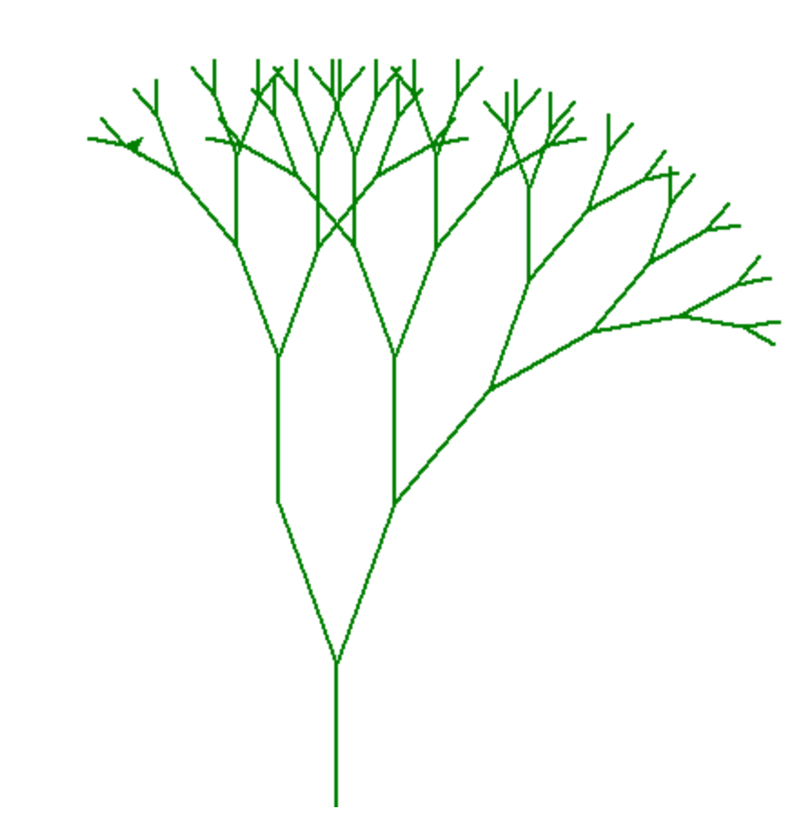

上篇文章《编程环境》中，我们了解了如何搭建一个 Python 的编程环境。
有了编程环境之后，理论上就能实现任何想要的程序了。
如《DOOM 启世录》中所说：
如果你想动手开发什么全新的技术，你不需要几百万美元的资金，你只需要在冰箱里放满比萨和可乐，再有一台便宜的计算机，和为之献身的决心。
Python 编译器，就是我们的计算机，是我们征战星辰大海的装备。
程序都是由代码编写出来的，代码的编写具有一定的规则，了解这些规则，就能更容易地理解和编写程序逻辑了。
编码规则大体由 语法 和 流程控制 两部分组成。
虽然不同的编程语言，语法 和 流程控制 的形式有所不同，但含义和理念是相通的。
只要了解了一种编程语言的编码规则，学习其他编程语言，就容易多了。
今天，我们先来了解一下 Python 中的 基本语法。
语法构成
编程语言的语法一般都由 关键字、变量、内部方法 和 块结构 四个部分构成。
Python 也一样。
先看一段 Python 的 示例代码 （后面提到的 示例代码，就是这段代码）：
1 |
|
读者可能读不懂这段代码，不过没关系，今天我们只是了解代码的构成，对这段代码有个感官认识就可以了。
这段代码的整体作用是：引导用户输入一个数字，然后判断这个数字是否大于 10，并输出判断结果。
下面我们来看看，语法的四个部分的意义和表达方式。
关键字
关键字，也被称为 保留字，是编程语言为了实现程序逻辑、提高编译效率，预先定义好一些单词。
比如，示例代码中，包含的关键字有：if、else、def、try、True、False 等。
关键字能帮助我们 组织程序逻辑，比如 if 用来表达一个判断，def 用来定义一个方法；
或者 代表某种数据或者含义，比如 True 表示逻辑真，False 表示逻辑假。
如何识别代码中的关键字呢？
除了记住之外，一般，代码编辑器都有语法高亮功能，会将当前编程语言中的 关键字、内部方法 等做不同的高亮处理，以便让程序员识别。
Python 中大概有三十多个关键字，而且随着 Python 语言功能的升级，关键字会有所变化。
想知道当前使用的 Python 编译器中，有哪些关键字吗？
很简单，在编译器的交互模式中，执行下面代码即可：
1 | import keyword |
将代码保存成代码文件，用执行模式执行也成
这么多关键字，要记到啥时候去呀！？
不用着急，随着我们的学习和实践，理解并应用它们是自然而然的事情，而且常用的关键字，没几个。
变量
一般我们对 变量 的理解是：一件事情或者过程中会发生变化的因素；或者初中数学中，函数的自变量 和 因变量。
感觉好像是：变量用来代表一个携带信息的容器。
如果有这样的认识，就太好了，因为程序中的 变量 就是用来存储各种各样数据的。
当我们需要：
- 记录数据，比如现在的统计值，或者处理到了第几个等；
- 操作对象，比如读取文件内容，或者控制播放器等；
- 传送信息，比如将计算结果返回出来，或者将数据交给其他程序去处理等；
在这些时候，就需要用到变量了。
这些情况和我们日常生活离得很近，比如买菜时计算一下总金额，给朋友发段消息等，过程中，我们会将中间结果记在脑子里或者写在纸上，将信息输入微信里等
而程序中，需要将中间结果、信息等等记录在变量里。
不过程序中的变量很灵活，只要是能被存入计算机里的东西（数据或者信息，存入计算机的过程称作 信息化），都能用变量来记或者表示。
从某种意义上来说，编程就是对变量的处理加工过程。
既然变量是用来存储信息的空间（这种说法并不严谨），那么如何开辟或者得到这个空间呢？
这个开辟的过程，叫作 变量定义 或者 变量声明，通过这个过程，才能得到计算机内存中的一块区域，并且对这块区域命名，以便在程序中操作。
如何定义变量呢？
神奇的是，Python 中，不需要这个定义过程，需要使用变量时，起个名字，直接用就可以了，就好像这个变量代表的空间，早已开辟好了似的。
比如示例代码中：inputValue = input('输入一个数字：')，就是将用户的输入内容，存储到 inputValue 这个变量中，而 inputValue 这个变量是拿来就用的，我们看不到事先对它的声明。
这是因为 Python 是一种解释型的动态语言，编译器在理解代码时会做大量的补充工作，替我们做了我们所利用的变量的定义。
类似的动态语言还有 Javascript，也不需刻意声明变量。
更神奇的是，Python 中的变量可以存储任何类型的数据或者信息，怎么回事呢？
我们在了解 对象 等概念时，再深入了解。
现在，我们只需要知道变量是用来存放数据的就行了，当遇到需要 记录、操作、传送数据时，知道应该使用变量即可。
内部方法
除了关键字，还有一些类似关键字，具有一定功能的代码，比如示例代码中的 input、print、int 等，被称为 内部方法，是编译环境，为开发者更方便地实现功能，而提供的方法。
比如 input 可以获取用户的输入；print 可以在终端上打印一段字；int 尝试将一个字符串转化为整数。
理解程序中的方法
要理解 内部方法，需要先理解什么是 方法。
编程语言中的方法，和我们日常理解中的方法类似，就是处理某个事情的操作步骤。
比如，处理电子邮件的步骤是：
输入身份验证信息、登录邮箱、进入收件箱、从邮件列表中，找到未读邮件……
将处理某件事的步骤整理在一起，就会形成一个方法，给这个方法起个名字，比如：处理电子邮件。
那么，程序中，将处理过程的代码，集中在一起，并给它们起个名字，就形成了方法，比如 print，就是将如何在终端屏幕上显示一段文本的方法，打包在其中，并命名以 print。
方法处理过程中，可能需要用到一些特定的数据，比如 处理电子邮件 方法中的身份验证信息，会因人而异。但对于方法本身来说，并不会因为这些特殊信息不同而不同。
以此，将方法处理过程中，需要的特定的信息称作 参数，在使用方法时，由使用者提供。
为啥将特殊数据称作参数呢？
是因为程序中的方法，和数学函数很像，实际上，程序中的方法就是源自于数学中的函数。
回想一下计算物体的速度的公式：速度 = 移动的距离 / 移动的时间。
写成函数就是:
d 表示移动的距离，t 表示移动的时间。只要提供特定的距离和时间，就能算出对应的速度。
就是将参数代入函数，就能得到结果，那么这是不是和程序中的方法类似呢？简直就是一模一样。
因此，给程序中的方法提供的特殊数据，就被自然地称为参数了。
也正是因为程序中的方法与数学中的函数意义相同，方法也被称作 函数。
那么当提到方法和函数时，绝大多数情况下，指的是一会事儿。
严格地说，内部方法不属于编程语言本身的一部分，因为，它们可以通过编程语言提供的能力来实现。
打个比方，如果编程语言是各种形状的积木块的话，内部方法就是已经拼接好的一些积木，理论上，我们完全可以通过积木来拼装任何内部方法。
但，如果任何功能都需要开发者自己去实现，是不现实的，而且开发过程中，大部分功能是类似，可以重复利用的。
因此，将这些常用的、与操作系统相关的功能，就被实现在了编程语言提供的编译环境中，不但可以节省开发时间，而且能保证功能的质量。因为我们不能指望一个连五金件都需要自己加工的装修队，能如期地、物美价廉地完成任务。
因此，需要了解基本的内部方法，以便我们能理解程序代码，并帮助我们实现特定功能。
有哪些内部方法呢？
随着实践的深入，会自然地了解相关内部方法，会像了解关键字一样，也是个自然而然的过程。
块结构
写文章，有段落结构，编写代码也一样，也有段落结构，即 块结构。
观察一下我们示例代码，不难发现，代码大体上分为三部分：
-
第一部分由
def开始； -
第二部分由
inputValue开始，只有一行； -
剩下的是第三部分。
1 | # 第一部分 |
这些个部分，被称为 代码块，而整个代码，就是由多个代码块组合而成的。
代码块的组合方式就构成了编程语言的 块结构。
不同编程语言的 块结构 有所不同，不过大体分为两类：
第一类是由 块标识符 来标记，比如 Javascript，是用 {} 来定义块的：
1 | function hello() { |
第二类是通过代码的书写结构定义的，比如，Python。
书写结构定义方式，有个巨大的好处，就是编写的代码更规范。不需要刻意去做对齐，缩进等操作，代码自然而然是整齐统一的。
我们在第一篇文章 《编程，真的不难》中，提到过，编码规范是编程中一个重要的问题，而我们用 Python 编程，能一定程度上提高编码的规范性。
Python 中，代码块是由 起始行，加行后的 :，以及起始行后的，比起始行缩进一个缩进单元的内容 构成的。
当要完成 判断、方法定义、类定义、异常检测 等功能时，需要使用块结构。
比如，示例代码中，第一部分是 方法定义，第三部分是 判断。
关于每种代码块的具体用法，我们在后面再详述，这里只做一个感性认识就行。
Python 中使用块结构，需要注意以下两点：
-
同一份代码文件中，缩进标准必须一致。比如都是 4 个空格，或者都是一个制表符。如果标准不同，编译器将不能正确识别编码逻辑；
-
但凡表示块的地方，都是由
:开始定义块内容的。也就是只有缩进并不一定就是块的内容，比如由于一行内容太长，分割成多行书写，或者再定义特殊的数据结构时。
我们再观察一下上面的代码，还会发现，代码块的内部也是代码块，而且是可以层层嵌套，而形成了一种类似树的 分型结构：

这种代码块的组合形式，正是代码的组织方式。
另外我们也能了解到，块结构中，具有相同缩进的代码，是处于同等层次的，即 它们的起始行是对齐的。
比如，示例代码中，三个部分的起始行，都没有缩进，是处于同等层次的；第一部分内部，try 定义的异常检测块缩进了一个空白单位，而 try 内部比 try 多缩进了一个空白单位。
不同的层次会影响代码的执行流程，反之，可以通过控制代码的层次结构，来做代码的 流程控制。
总结
今天，我们了解了 Python 中的基本语法，以及构成语法的几个部分：
关键字、变量、内部方法、块结构。
为了更好地理解这些概念，留一个小作业，就是对示例代码，进行练习，要求是：
- 在自己的编程环境中，运行示例代码
- 按照自己的想法改造示例代码
练习中会遇到一些问题，可以先尝试自己寻找答案，比如找人讨论、或者在网上搜索，或者将问题附在留言中。
可能会觉得对 Python 还不懂，不知道如何表达自己的想法，或者从何写起。
其实不用担心，编程本身就是个不断探索的过程，而诸多经验技能都是从探索中得到的。
另外，也不要担心自己的探索会毁掉计算机，或者引发核战争哈哈，尽管尝试，现在的计算机，像是个坚强的、自我保护能力强大的、贴心的玩具，只要不对它进行物理伤害，可以随便玩。
下期，我们将一起了解如何控制程序流程，以表达丰富的程序逻辑。
笔者的水平有限，文章中难免出现各种错误和问题，恳请读者不吝批评、指正。十分感谢！
比心！